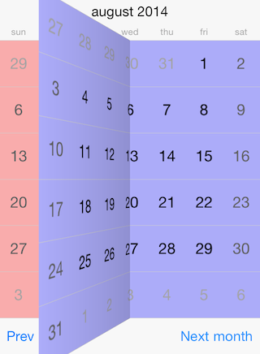

Calendar: View Transitions
View transitions allow for switching to the next/previous month with different animation effects. Those effects are available in all view mode presenters that inherit from TKCalendarPresenterBase. These include: month, month names, year numbers. Detailed information about view modes is available in this help article: View modes

The available animations are: card, flip, flow, fold, rotate, and scroll. The default transition is scroll. You should access the transitionMode property of the presenter class in order to customize the transition effect:
Objective-C
TKCalendarMonthPresenter *presenter = (TKCalendarMonthPresenter*)calendarView.presenter;
presenter.transitionMode = TKCalendarTransitionModeFold;
Swift
let presenter = calendarView.presenter() as! TKCalendarMonthPresenter
presenter.transitionMode = TKCalendarTransitionModeFold
The following options can be applied on transitions:
The transitionIsVertical changes the horizontal/vertical orientation of the transition, this changes also the activation gesture:
Objective-C
presenter.transitionIsVertical = YES;
Swift
presenter.transitionIsVertical = true
The transitionIsReverse changes the forward/backward direction of the transition, thus changing its effect.
Objective-C
presenter.transitionIsReverse = YES;
Swift
presenter.transitionIsReverse = true
Finally the transition duration can be customized by setting the transitionDuration property:
Objective-C
presenter.transitionDuration = 2.;
Swift
presenter.transitionDuration = 2.0